Accelerating developer productivity with Windows 365
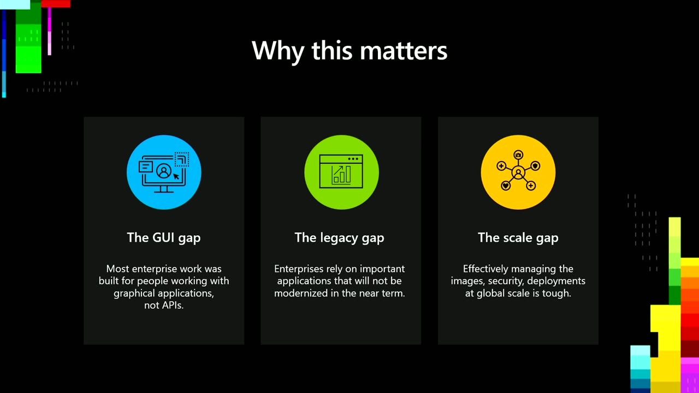
Official description
This session explores how Windows 365 delivers secure, automated cloud experience for development. It covers developer ready images, performance enhancements, and professional grade Cloud PC capabilities. Learn what’s available today and how to use Windows 365 Cloud PCs as a flexible development platform across devices and locations—without sacrificing enterprise security.
Summary
Overview
Windows 365 is positioned as a cloud-based development platform that delivers pre-configured, ready-to-code Cloud PCs accessible from any device, reducing environment setup friction while preserving enterprise security and centralized IT control. The session also extends this model to AI agents through Windows 365 for Agents, which provisions full Windows environments so agents can operate graphical and legacy applications, all governed through familiar Microsoft management tooling.
Key announcements
- Windows 11 developer configuration image in public preview (00:05:34
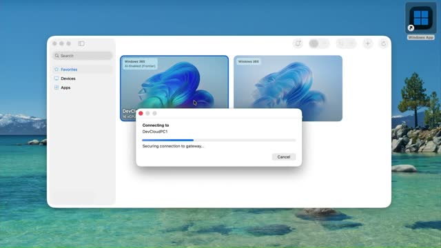
m05sm10s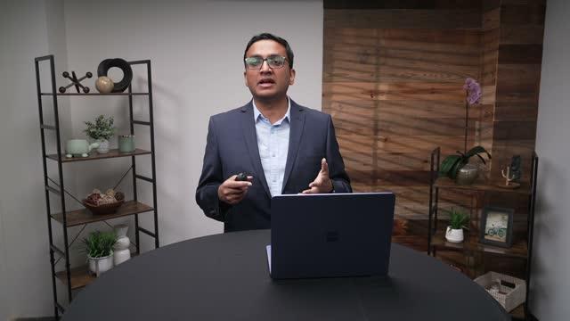
p05s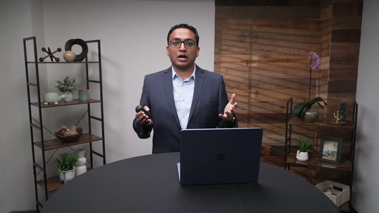
p10s) — A developer-optimized marketplace image that arrives pre-loaded with Visual Studio, Git, GitHub CLI, Python, Node.js, GitHub Copilot, and WSL with Ubuntu already configured. - Windows 365 for Agents is generally available (00:13:28
 m05s
m05s m10s
m10s p05s
p05s p10s) — Gives AI agents their own Cloud PCs with full Windows environments so they can see, interact with apps, and operate as a person would.
p10s) — Gives AI agents their own Cloud PCs with full Windows environments so they can see, interact with apps, and operate as a person would. - New 32-core SKU with up to 128 GB RAM (00:08:00
 m05s
m05s m10s
m10s p05s
p05s p10s) — Expands the diversity of Cloud PC compute options for memory-intensive local AI workloads.
p10s) — Expands the diversity of Cloud PC compute options for memory-intensive local AI workloads. - MCP tool layer for agents (00:15:24
 m05s
m05s m10s
m10s p05s
p05s p10s) — A set of Model Context Protocol tools lets any MCP-speaking agent framework provision, connect to, interact with, and manage the lifecycle of a Cloud PC, managed through the Agent 365 portal.
p10s) — A set of Model Context Protocol tools lets any MCP-speaking agent framework provision, connect to, interact with, and manage the lifecycle of a Cloud PC, managed through the Agent 365 portal.
{kind=link}
{kind=link}
{kind=link}
{kind=link}
Topics covered
- Developer time lost to maintenance, configuration, and cross-platform context switching.
- Accessing a persistent Cloud PC from any device (including macOS) via the Windows App.
- Workload-specific Cloud PCs, including GPU-enabled configurations for heavier compute.
- Project-level customization with SDKs, CLIs, build tools, and automatic repository cloning within enterprise guardrails.
- Running local language models on Cloud PCs to avoid per-token costs, demonstrated with Foundry Local, a Qwen model, and a Local AI Studio using ComfyUI and Stable Diffusion 1.5.
- Remote, device-independent steering of GitHub Copilot CLI sessions that continue running on an always-available Cloud PC.
- The GUI gap, legacy gap, and scale gap that block agent adoption in enterprises.
- IT administration in Intune: provisioning policies, workforce models, networking, marketplace and Azure Compute Gallery images, scope tags, and context-based redirection with conditional access.
Notable quotes
"Just as Office 365 brought productivity to the cloud, Windows 365 brings Windows to the cloud." — Roop Kiran Chevuri
"You need to give your agent a computer. That's what Windows 365 for Agents does." — Phil Gerity
"Tokens are the digital currency of AI, but developers find themselves hitting budget constraints on how much they can spend running the frontier models online." — Roop Kiran Chevuri
Products and tools mentioned
- Windows 365
- Windows 365 for Agents
- Azure Virtual Desktop
- Windows App
- Visual Studio
- Git, GitHub CLI, GitHub Copilot, GitHub Copilot CLI
- Python, Node.js
- WSL with Ubuntu
- WinGet, Docker, Postman
- Microsoft Foundry / Foundry Local
- Qwen [inferred]
- ComfyUI
- Stable Diffusion 1.5
- Agent 365 (portal, CLI, toolkit)
- Model Context Protocol (MCP)
- Microsoft Intune
- Microsoft Entra ID
- Azure Compute Gallery
- Windows 365 Enterprise, Windows 365 Flex Dedicated, Windows 365 Flex Shared
Speakers featured
- Roop Kiran Chevuri — Principal Group Product Manager, Windows 365 and Azure Virtual Desktop
- Phil Gerity — Partner Group Product Manager, Windows 365 and Azure Virtual Desktop
Follow-up resources
- On-demand deep dive by Joydeep Mukherjee and Sam Shapiro covering the full developer cycle.
- Session OD852 on Windows 365 for Agents.
- Sessions BRK260 and BRK261 on the developer experience on Windows.
Frames
{kind=link}
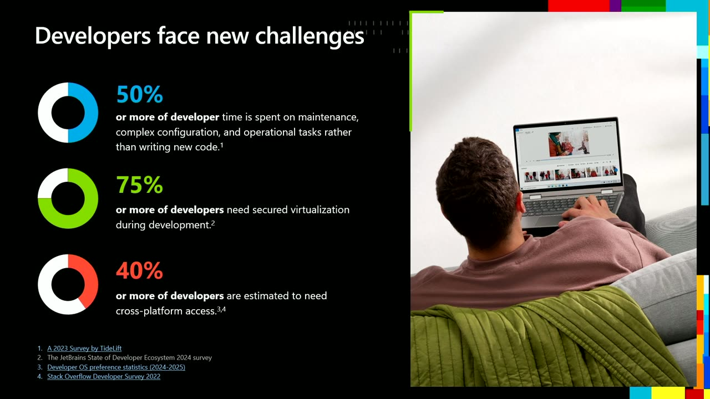
{kind=link}
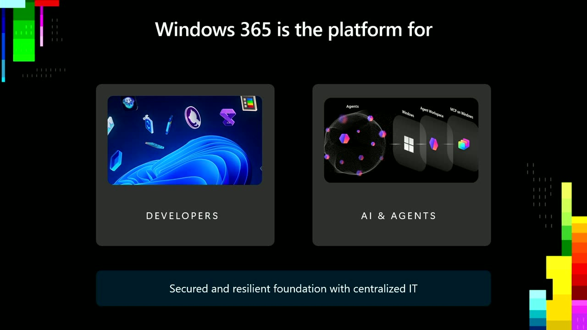
{kind=link}
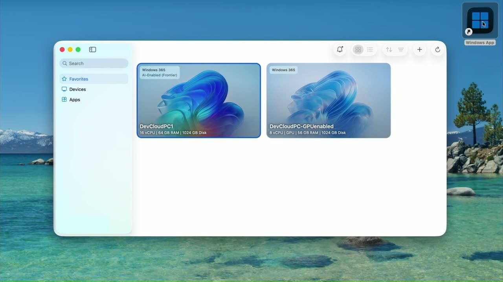
{kind=link}
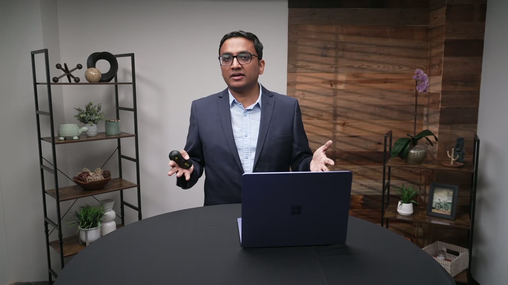
{kind=link}
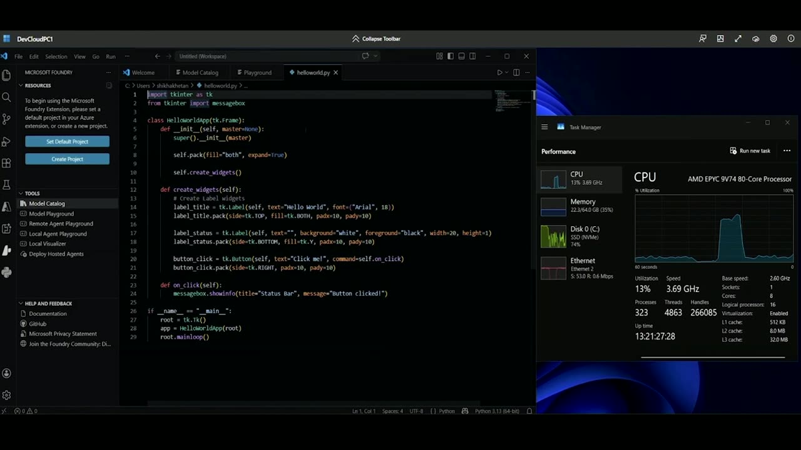
{kind=link}
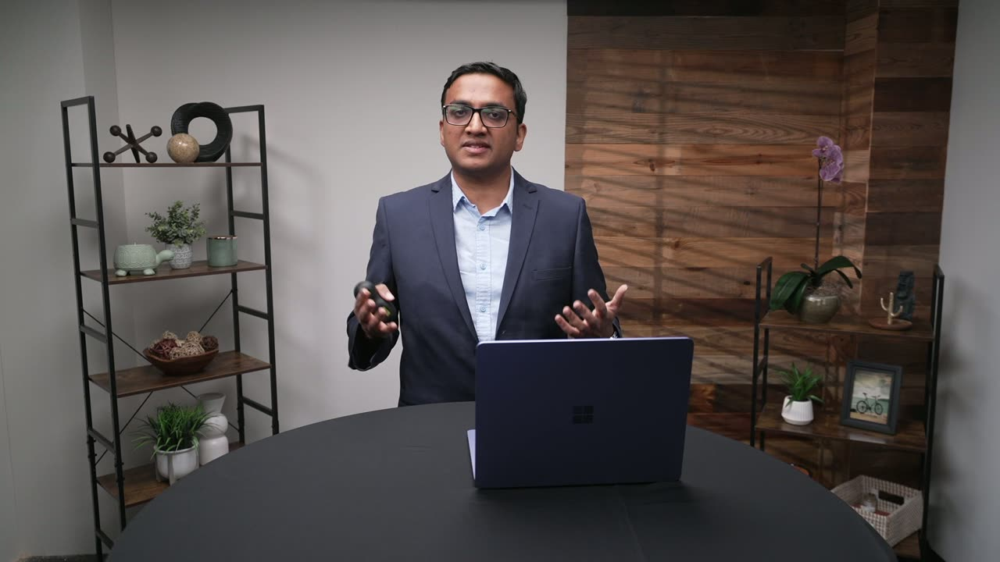
{kind=link}
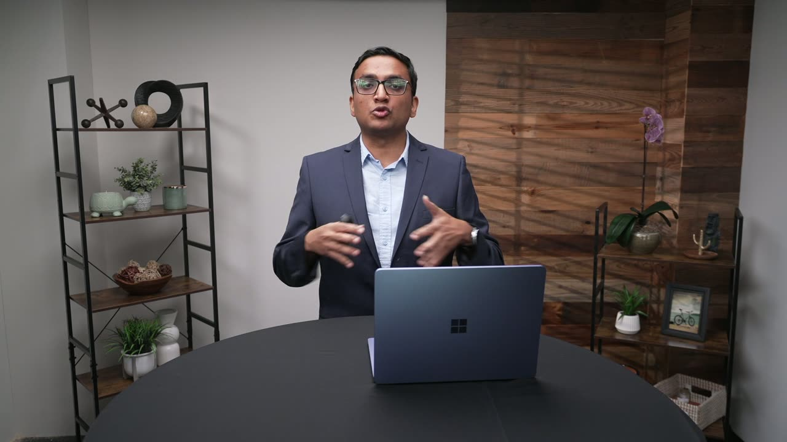
{kind=link}
{kind=link}
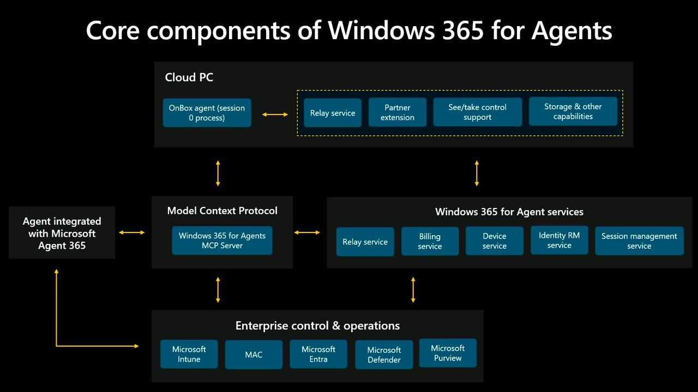
{kind=link}
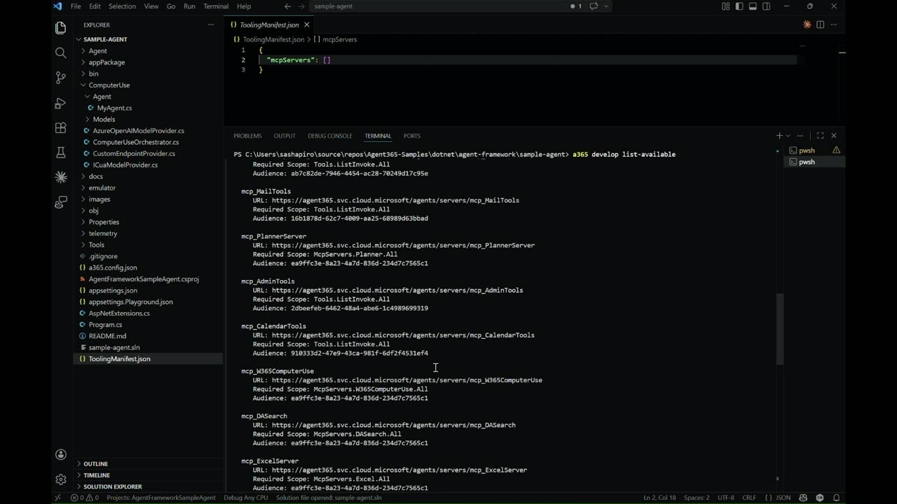
{kind=link}
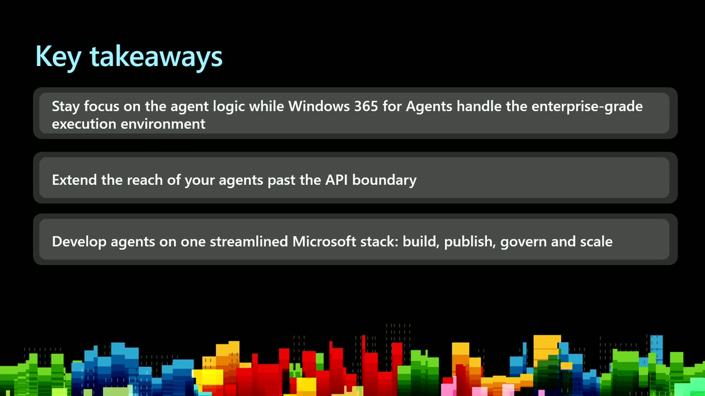
{kind=link}
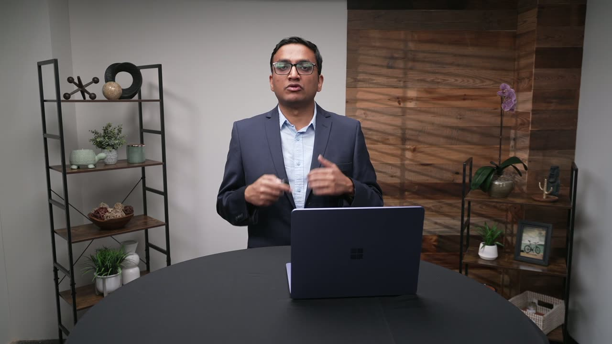
{kind=link}
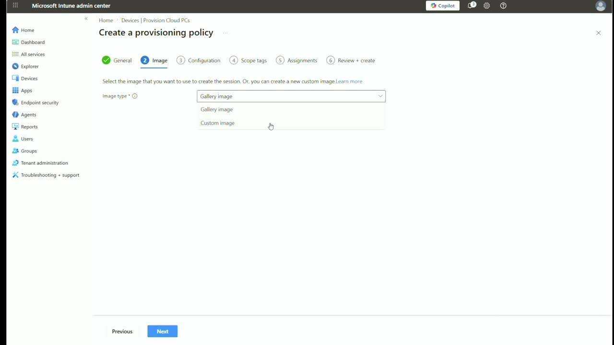
{kind=link}
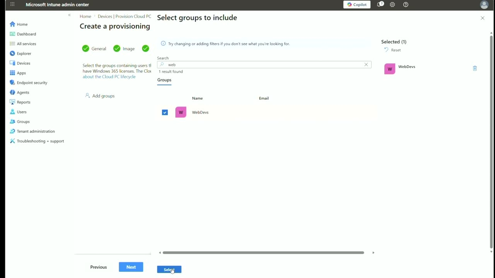
{kind=link}
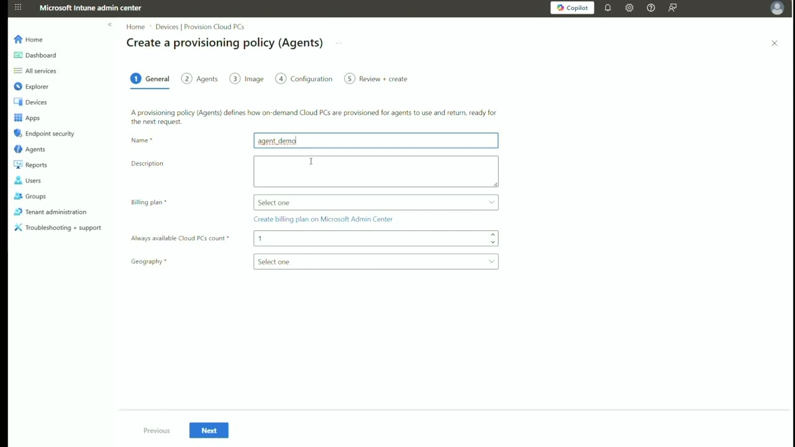
Transcript
Show / hide transcript (35,260 chars)
[00:00:00] ROOP KIRAN CHEVURI: Welcome, everyone, [00:00:01] and thanks for joining at Microsoft Build. [00:00:03] We are excited to have you here. [00:00:05] I'm Roop Kiran Chevuri, Principal Group Product Manager [00:00:08] for Windows 365 and Azure Virtual Desktop. [00:00:10] PHIL GERITY: And I'm Phil Gerity, [00:00:11] Partner Group Product Manager for Windows 365 [00:00:14] and Azure Virtual Desktop. [00:00:16] ROOP KIRAN CHEVURI: Together we'll walk you [00:00:17] through how Windows 365 is being designed and evolved [00:00:19] to support modern developers, whether you're building locally, [00:00:22] in the cloud, or across hybrid environments. [00:00:25] Let's take a quick look at what we will cover today. [00:00:28] In this session, we are going [00:00:29] to show how Windows 365 helps you build, test, [00:00:32] and scale faster, from reducing environment setup friction [00:00:36] to enabling AI and agent-driven workflows, all on a secure, [00:00:39] centrally managed foundation. [00:00:42] Developers face new challenges. [00:00:43] Let's take a look at what Windows 365 enables [00:00:46] for developers today. [00:00:48] If you are a developer, this probably sounds familiar. [00:00:51] You sit down, ready to write code, [00:00:53] and instead you are dealing with environment setup, [00:00:56] configuration issues, or switching [00:00:57] between machines and platforms. [00:01:00] As development environments continue to evolve, [00:01:02] they are also becoming more complex, [00:01:03] and that complexity is pulling developers away [00:01:06] from the work they actually want to do, [00:01:07] which is building software. [00:01:09] The data reflects this clearly. [00:01:11] More than half of developers' time is now spent [00:01:14] on maintenance, configuration, and operational tasks, [00:01:18] rather than writing new code. [00:01:19] Over 75% of developers need secured virtualization [00:01:23] or container-based environments just [00:01:25] to do their day-to-day work. [00:01:27] And 40% or more need cross-platform access, [00:01:31] often moving between Windows, macOS, and Linux to build, test, [00:01:35] and validate applications. [00:01:36] These are the increasing challenges for developers, [00:01:39] and it's this context for why we started rethinking how Windows [00:01:43] development environments should work. [00:01:46] This is where Windows 365 comes in. [00:01:48] Microsoft is uniquely positioned to bring the PC [00:01:51] and the cloud together, [00:01:53] and Windows 365 delivers those benefits directly [00:01:56] to modern development. [00:01:58] It provides a cloud development environment [00:02:00] with a ready-to-code Windows 365 cloud PC, [00:02:04] which is pre-configured with GitHub [00:02:06] and preferred developer tools, [00:02:08] helping teams get productive faster [00:02:10] and reduce environment friction. [00:02:14] Just as Office 365 brought productivity to the cloud, [00:02:17] Windows 365 brings Windows to the cloud. [00:02:20] For you, this means the right environment for each task. [00:02:24] You can assign one or multiple cloud PCs, [00:02:27] each set up for a specific workload, whether for coding, [00:02:30] testing, or AI development. [00:02:32] With Windows App, you can access your cloud PC from any device [00:02:36] and switch seamlessly between your local desktop [00:02:39] and cloud environment, using familiar gestures and shortcuts. [00:02:45] Windows 365 securely streams a full Windows experience, apps, [00:02:49] data, and settings from Microsoft Cloud to any device, [00:02:53] giving you consistent, secured access without being constrained [00:02:57] by local hardware or configuration issues. [00:03:00] With Windows 365, you can focus less on managing environments [00:03:05] and more on coding and shipping. [00:03:09] So far, we talked about how Windows 365 helps developers [00:03:13] work with less friction, but development isn't just [00:03:16] about human developers anymore. [00:03:18] We are seeing a fundamental shift [00:03:20] in how software gets built, [00:03:22] where developers are no longer working alone but with AI [00:03:26] and agents that generate code, test ideas, automate tasks, [00:03:31] and unlock entirely new workflows. [00:03:33] And whether the work is done by people or by AI [00:03:36] and agents acting on their behalf, [00:03:38] enterprises still require a secure foundation [00:03:41] with centralized IT control as a non-negotiable baseline. [00:03:46] This is where Windows 365 becomes more [00:03:48] than just a development environment; [00:03:50] it becomes a platform. [00:03:52] In the rest of the session, [00:03:53] we'll see how Windows 365 empowers developers [00:03:55] to experiment, build, and ship faster while enabling the secure [00:04:00] and scalable environment as a foundation for IT-driven [00:04:03] and agentic workflows to run safely at scale. [00:04:08] Let's start with what Windows 365 can do for human developers. [00:04:12] Development today isn't tied to one machine. [00:04:14] You switch between devices all day, [00:04:16] but every switch comes with friction. [00:04:19] Rebuilding your environment, syncing your setup, [00:04:22] thereby losing your momentum. [00:04:24] What you really want is a simple, [00:04:26] same development environment everywhere. [00:04:28] That's where Windows 365 comes in. [00:04:30] You can connect to your full development environment [00:04:33] as a cloud PC from any device and pick up right [00:04:37] where you left off while your code, tools, [00:04:40] and configurations stay secured in the cloud. [00:04:44] Here I am on my personal Mac device, [00:04:47] but I'm connecting straight into my development cloud PC. [00:04:51] So I still get the full Windows development experience while my [00:04:54] source code and environment stay securely in the cloud instead [00:04:57] of living on the local device. [00:05:00] And if you're a developer working across different kinds [00:05:03] of tasks, you're not limited to just one setup. [00:05:05] You can have multiple environments, [00:05:07] workload-specific compute needs, might have a 16-core cloud PC [00:05:12] for your day-to-day coding, builds, and testing, [00:05:15] and a separate GPU-enabled Cloud PC when you need more power [00:05:18] for things like heavier compute or visualization workloads. [00:05:22] Getting into Cloud PC is simple, quick, and frictionless. [00:05:26] One click in the Windows App and you are in, ready to work. [00:05:29] It's fast enough to feel like a seamless extension [00:05:31] of your workflow and not a separate step. [00:05:34] I'm excited to announce [00:05:35] that Windows 365 now supports a new Windows 11 developer [00:05:39] configuration image in public preview. [00:05:42] Once the developer-optimized image Cloud PC launches, [00:05:45] I'm not starting from a vanilla machine [00:05:47] or spending time setting things up. [00:05:48] When I sign in, the environment is ready to go. [00:05:51] Tools like Visual Studio, Git, GitHub CLI, Python, Node.js, [00:05:56] and GitHub Copilot are already installed, [00:05:58] and WSL with Ubuntu is already set up. [00:06:01] So I can start work across both Windows [00:06:04] and Linux workflows right away. [00:06:06] It also comes with developer-focused settings [00:06:09] and Windows configurations already in place, [00:06:11] which helps cut down the setup friction and gets me [00:06:14] to actual coding and that first commit a lot faster. [00:06:19] Now, as a developer, I need an environment that's tailored [00:06:21] to the project I'm working on. [00:06:23] And with Cloud PCs, [00:06:24] that environment can be fully customized with the exact SDKs, [00:06:27] CLIs, and packages, and build tools my project requires while [00:06:31] still staying within the enterprise guardrails. [00:06:34] Here, my project needs WinGet, Docker, and Postman, [00:06:37] and these are getting installed automatically the moment I [00:06:40] log in. [00:06:41] It can clone my repository automatically as part [00:06:44] of the project setup script, and my environment is ready for me. [00:06:47] Instead of having to wait for IT to package tools and push them [00:06:50] to a machine, everything I need is already there from the start, [00:06:54] so I can jump straight into coding. [00:06:56] That means I stay productive [00:06:58] in project-specific setups while still benefiting [00:07:01] from the organization's consistency, [00:07:03] security, and control at scale. [00:07:06] Developers get the speed [00:07:07] and flexibility while IT keeps governance and control. [00:07:10] That's the balance Cloud PC unlocks. [00:07:13] Tokens are the digital currency of AI, [00:07:15] but developers find themselves hitting budget constraints [00:07:18] on how much they can spend running the frontier [00:07:20] models online. [00:07:22] To address this, it's becoming more common for applications [00:07:25] to leverage models running directly [00:07:27] on the developer-controlled environment, such as Cloud PCs, [00:07:30] where available compute can be used more flexibly [00:07:33] without incurring additional token-based costs. [00:07:36] In this case, I'm going to start by going to VS Code [00:07:39] and launch Microsoft Foundry. [00:07:42] From the model catalog page, you can filter on the models [00:07:45] that can run locally, and in this case, I'm choosing the one [00:07:48] that runs in the CPU only. [00:07:50] To make this demo short, I'll do a small Qwen model, [00:07:53] but there are many to choose from, as you can see. [00:07:55] You're only limited by the amount [00:07:57] of free RAM you have available. [00:08:00] Windows 365 offers a diversity of SKUs, [00:08:02] right up to 128-gigabit RAM, powered by our new 32-core SKU. [00:08:08] This downloads and installs the model locally. [00:08:11] Foundry Local has this concept of a playground, [00:08:13] which gives me a chat window to test my models. [00:08:16] So here I'm going to ask it to create a Hello World GUI app [00:08:19] from Windows in Python, with Windows-sized 400x400 pixels. [00:08:24] Notice how the CPU spikes as it uses the local model, [00:08:28] but the networking stays the same, as everything is happening [00:08:31] within the Cloud PC session. [00:08:33] Once the code is ready, we can save the file, say, [00:08:36] HelloWorld.python, and then we can go and execute this. [00:08:41] With that done, let's try something more fun. [00:08:44] I built this local AI studio using GitHub, [00:08:49] Copilot CLI to experiment [00:08:50] with running language models locally on my Cloud PC. [00:08:53] It worked great, but I hit a UI flicker bug. [00:08:57] I gave Copilot instructions to fix it, [00:08:59] and now I'm validating the fix. [00:09:01] First, I'll trigger the vision model. [00:09:03] It analyzes an image and generates a prompt. [00:09:07] This restarts ComfyUI. [00:09:10] This is the engine used for the AI image generation. [00:09:13] The restart causes the caption to update, [00:09:15] which is where the flicker used to happen. [00:09:18] While that is running, I'll switch over and load one [00:09:21] of the many models Local AI Studio detected as would work [00:09:24] on this particular Cloud PC. [00:09:26] I'll use this chat feature here and paste a prompt [00:09:29] about popular seafood dishes in Seattle, [00:09:33] and you can see it quickly returns a detailed response. [00:09:36] Now let's try something else. [00:09:37] Now I'll ask to translate that into Japanese, and it does. [00:09:42] Let's go back to the image generation, [00:09:43] which we started with, and you will see ComfyUI has now [00:09:46] restarted, and the vision model has generated a new prompt. [00:09:50] So I'll accept the defaults and run the image generation now [00:09:53] with Stable Diffusion 1.5 using the default settings, [00:09:56] and it works, producing a fresh interpretation [00:09:59] of the original image. [00:10:02] What this really unlocks is predictable AI economics. [00:10:05] With local language models running on your device [00:10:07] or Cloud PC, you are no longer paying per token for every task [00:10:11] that can be solved locally, whether it's coding, [00:10:14] translation, image generation, or vision. [00:10:17] These experiences run your app powered by local language models [00:10:21] and without the variability of Cloud consumption. [00:10:24] So that's how Windows 365 enables developers [00:10:26] to run language models directly in the Cloud PC. [00:10:29] But what makes it even more powerful is how the development [00:10:33] workflow continues beyond a single environment. [00:10:38] Here I am on my Mac on the left-hand side [00:10:40] of the screen working in GitHub. [00:10:42] On the right is my developer-optimized Windows 365 [00:10:45] Cloud PC launched from the Windows App. [00:10:48] Fully configured with GitHub Copilot CLI and ready to go. [00:10:52] I start by enabling remote sessions on my Cloud PC. [00:10:55] Once this is enabled, I can now monitor [00:10:58] and steer a running GitHub Copilot CLI session directly [00:11:02] from my device of choice. [00:11:03] Here I prompt Copilot through the GitHub web interface [00:11:06] to create a GUI app in Windows using Python [00:11:09] that says "I love my Cloud PC." [00:11:12] As you can see, I'm not tied to a single device. [00:11:15] I can step away from my desk, even close my laptop lid, [00:11:18] and still stay connected to what's happening. [00:11:21] The session continues to run on my always available Cloud PC, [00:11:24] so nothing pauses when my local device goes to sleep. [00:11:28] The code is written and executed [00:11:30] in the Cloud PC environment even though I initiate everything [00:11:33] from my local device. [00:11:37] This experience works across devices; whether I start [00:11:40] on a Mac or a PC or a mobile device, I can keep an eye [00:11:44] on progress from wherever I am. [00:11:46] It also works across my workspace, supporting Norgate, [00:11:49] Norgate Hub, and multi-repo sessions, [00:11:52] so it fits however your project is structured. [00:11:56] You can also have multiple agent sessions running at once. [00:12:00] My Cloud PC handles the execution while I stay [00:12:02] in control, reviewing progress, approving next steps, [00:12:05] and guiding the outcome without needing to stay at my desk. [00:12:10] Because everything runs [00:12:11] in a persistent enterprise-managed Windows [00:12:13] environment, my work still remains secure, [00:12:16] consistent, and uninterrupted. [00:12:19] Windows 365 brings your development environment [00:12:22] to the Cloud so you can stay productive wherever you are [00:12:26] with the same tools, the same experience, [00:12:28] and no disruption to how you work. [00:12:30] In summary, Windows 365 gives you a secure, [00:12:33] personalized dev environment you can access from any device. [00:12:37] It's always ready to code with pre-configured tools, [00:12:40] easy to customize, and lets you run your dev or AI workloads [00:12:43] with predictable costs from any device while keeping your [00:12:46] workflow seamless between local and Cloud. [00:12:48] Now let me hand over to Phil. [00:12:50] PHIL GERITY: Thank you, Roop. [00:12:51] Hello, everyone. [00:12:52] I'm Phil, and for the next few minutes, I'll walk you [00:12:54] through how Windows 365 is also the platform for AI and agents. [00:12:59] Every AI agent builder hits the same wall. [00:13:02] Your agent can reason, it can plan, it can call APIs, [00:13:06] but the moment you need it to actually do work, [00:13:08] open an application, fill out a form, navigate a legacy system, [00:13:13] use any app that exists on Windows, you're stuck. [00:13:16] You need to give your agent a computer. [00:13:18] That's what Windows 365 for Agents does. [00:13:20] It gives your agents their own Cloud PC, [00:13:22] full Windows environments, so they can see, [00:13:25] interact with apps, and operate the way a person would. [00:13:28] And today, I'm here to tell you that Windows 365 [00:13:31] for Agents is generally available. [00:13:34] Before I get into the platform, I want to be specific [00:13:36] about the problems it solves, [00:13:38] because if you're building agents for the enterprise, [00:13:41] you've lived all three of these. [00:13:43] The first is the GUI gap. [00:13:45] Most enterprises' work still happens [00:13:47] in graphical applications [00:13:48] such as proprietary line-of-business apps [00:13:51] or browser-based portals, [00:13:52] and these tools were built for humans, not APIs. [00:13:55] Your agent needs to interact with them. [00:13:58] It needs a screen and a way to use it. [00:14:00] Windows 365 for Agents gives it exactly that. [00:14:03] The second is the legacy gap. [00:14:05] Enterprises run line-of-business applications that remain outside [00:14:09] of modernization efforts. [00:14:11] Mainframe terminal emulators, desktop-only finance tools, [00:14:16] that internal app from 2008 that everyone depends on [00:14:19] and no one wants to rewrite. [00:14:21] Agents with Cloud PCs can automate these systems [00:14:24] as they are. [00:14:25] No API wrapping, [00:14:27] no screen-scraping hacks, no rewrite required. [00:14:31] And the last is the scale gap. [00:14:33] Maybe you've already solved the first two problems [00:14:35] on a single VM somewhere, but how do you go from one agent [00:14:39] on one machine to 100 agents serving your [00:14:42] entire organization? [00:14:44] How do you manage the images, the security, the lifecycle? [00:14:48] That's what the platform handles. [00:14:50] Pooled Cloud PCs managed at scale, governed by IT, [00:14:55] the same way you would manage a fleet of employee machines. [00:14:58] So what is Windows 365 for Agents? [00:15:01] At its core, it's three things. [00:15:03] First, it's Cloud PCs built for agents. [00:15:06] These are Windows environments. [00:15:08] Same Windows 365 Cloud PCs that people use today, [00:15:12] but provisioned, connected, and managed for agent use. [00:15:17] Your agent has a desktop, a screen, a keyboard, a mouse, [00:15:20] and can access any application that runs on Windows. [00:15:24] Second, it's an MCP tool layer. [00:15:28] MCP, the Model Context Protocol, is the open standard [00:15:31] for connecting agents to tools. [00:15:33] We ship a set of MCP tools [00:15:35] that lets your agent provision a Cloud PC, connect to it, [00:15:38] interact with it, and manage its lifecycle. [00:15:42] If your agent framework speaks MCP, [00:15:45] it works with Windows 365 for Agents. [00:15:48] Third, it's enterprise control and operations you already know. [00:15:53] Cloud PC pools are managed in Intune. [00:15:55] Identity goes through Entra ID. [00:15:58] Policies, compliance, [00:15:59] conditional access, it all just works. [00:16:02] There's nothing new for IT to learn. [00:16:04] They manage agent Cloud PCs the same way they manage user [00:16:08] Cloud PCs. [00:16:09] And all of this sits within Agent 365. [00:16:12] The MCP tool is managed with the Agent 365 portal, [00:16:16] and all of the observability and the governance [00:16:19] for your Windows 365-enabled agents surface the same way they [00:16:24] would do for any Agent 365-enabled agent, [00:16:28] making it easy for your IT admins to configure Windows 365 [00:16:32] for Agents alongside all of the other agents [00:16:34] in your enterprise tenant. [00:16:36] Now let's take a look at how easy it is to integrate [00:16:39] with Windows 365 for Agents MCP server using the A365 toolkit. [00:16:47] This is the tooling manifest. [00:16:49] It's where we declare which MCP servers this agent has [00:16:52] access to. [00:16:53] Right now, it's empty, no servers configured, [00:16:56] so the agent can't actually access Windows 365 for Agents. [00:17:00] To see what's available in the tenant, [00:17:02] I'll use the Agent 365 CLI and run list available. [00:17:06] You can see there's a rich set of MCP servers ready to go [00:17:11] out of the box, available through Agent 365. [00:17:14] The one we care about today is the Windows 365 computer use [00:17:17] MCP server. [00:17:18] Wiring it up is genuinely a configuration change, [00:17:21] not a code rewrite. [00:17:23] I just run add MCP server through the A365 CLI tool, [00:17:27] and it pulls the MCP server into the manifest, [00:17:30] and it writes all the configuration the agent needs [00:17:33] to authorize and use it. [00:17:34] And there it is. [00:17:35] The manifest is updated, and the agent now has access [00:17:38] to that MCP server. [00:17:40] Now let me show you a real-world use case of an AI agent running [00:17:44] on Windows 365 for Agents. [00:17:46] The agent you see here comes from one [00:17:48] of our lighthouse customers, Simular. [00:17:51] Simular is a research and product company focused [00:17:53] on achieving AGI through building agents [00:17:56] that work like humans. [00:17:58] Earlier this year, [00:17:59] they introduced Cy, an agentic coworker. [00:18:01] Cy sees the screen, moves the mouse, [00:18:03] and types on the keyboard. [00:18:05] It also uses APIs, terminals, and writes code. [00:18:10] In this video, you will see Cy using Windows 365 for Agents [00:18:14] to run an overnight claims processing workflow [00:18:17] in a Contoso claims app with no APIs. [00:18:21] Cy reads scanned claim forms, extracts key fields, [00:18:25] verifies coverage, and enters results directly [00:18:28] through the UI inside a Windows 365 for Agents Cloud PC. [00:18:34] In short, Simular's Cy brings the computer-use brain, [00:18:39] and Windows 365 for Agents provides the secure execution [00:18:44] layer for work to get done. [00:18:52] So let's bring it all together. [00:18:54] Three things to take away. [00:18:56] First, stay focused on agentic logic. [00:18:59] Windows 365 for Agents handles the execution environment [00:19:03] underneath, so your time goes [00:19:04] into what makes your agent valuable. [00:19:07] Second, extend the reach of your agents past the API boundary. [00:19:12] A lot of enterprise work still happens [00:19:14] in line-of-business applications that fall outside [00:19:17] of modernization efforts. [00:19:19] With a cloud PC, your agent can operate them [00:19:21] in the current state. [00:19:23] And third, build on one streamlined Microsoft stack, [00:19:28] from the MCP server to Agent 365 to Intune and Entra. [00:19:33] Build, publish, govern, [00:19:35] and scale on the tools your organization already trusts. [00:19:40] If you want the full developer cycle, Joydeep Mukherjee [00:19:44] and Sam Shapiro have a deep dive on-demand session [00:19:48] that takes you end-to-end. [00:19:50] Go watch it next. [00:19:52] Back to you, Roop. [00:19:53] ROOP KIRAN CHEVURI: Thank you, Phil. [00:19:54] Developers and agents cannot run without a secure foundation [00:19:57] with centralized IT management. [00:19:59] We have looked at this from the developer side, [00:20:01] how quickly you can get into a Cloud PC, [00:20:03] how the environment is ready to code from start, [00:20:05] and how developers can get the flexibility they need [00:20:08] without giving up a consistent experience. [00:20:12] We also saw how Windows 365 for Agents extends this further, [00:20:16] giving agents their own Cloud PCs. [00:20:19] Full Windows environments where they can see, interact with ops, [00:20:23] and operate much like a person would. [00:20:26] Now let's switch to the IT admin perspective and look [00:20:29] at what makes all of that possible behind the scenes. [00:20:33] At its core, Windows 365 is designed for simplicity. [00:20:37] IT can centrally provision these environments, [00:20:39] choose the right images, apply the right policies, [00:20:43] and keep development environments secure [00:20:45] and controlled without slowing developers down. [00:20:49] So while the developer experience feels simple [00:20:52] and fast, it's still built on an admin experience [00:20:55] that gives organizations the governance, the flexibility, [00:20:58] and security they need. [00:21:00] Let's dive into more. [00:21:01] From the IT admin side, this is [00:21:03] where you start tailoring the experience based [00:21:05] on what different developers actually need. [00:21:08] In the Intune portal, there is a dedicated place [00:21:10] to manage Cloud PCs, apps, settings, [00:21:13] and provisioning policies. [00:21:15] Let's start by creating a provisioning policy [00:21:17] for my web apps dev team. [00:21:19] This defines how and where the Cloud PCs get created. [00:21:23] Windows 365 supports multiple workforce models. [00:21:27] So you can choose between Windows 365 Enterprise, [00:21:29] Windows 365 Flex Dedicated, or Windows 365 Flex Shared, [00:21:33] depending on the scenario, [00:21:34] whether a developer needs a full-time Cloud PC [00:21:37] or more flexible access across environments. [00:21:40] My web app team needs a full-time Cloud PC, [00:21:43] so I choose Enterprise here. [00:21:46] On the networking side, you can choose Microsoft Hosted Network [00:21:49] if you want a simpler, fully Microsoft-managed setup, [00:21:52] or Azure Network Connection if you need Cloud PCs connected [00:21:55] to your own Azure virtual network. [00:21:57] We recommend using Microsoft Hosted Network [00:22:00] for its enhanced resiliency, so we'll select it here. [00:22:03] And because Windows 365 supports deployment [00:22:06] across regions globally, IT can place Cloud PCs closer [00:22:09] to the users for a better experience. [00:22:11] My web app team works in US West, so let's select it. [00:22:14] Images define the starting point for every Cloud PC. [00:22:17] They determine the OS, tools, [00:22:19] and baseline a developer gets on day one. [00:22:22] So picking the right image is key. [00:22:24] In the provisioning policy, admins have two main parts, [00:22:27] marketplace images or custom images. [00:22:30] Marketplace images are the fastest way to get started. [00:22:33] For more control, you can always use custom images, [00:22:36] including managed images or Azure Compute Gallery images, [00:22:39] all in the same experience. [00:22:41] With the Azure Compute Gallery, you get versioned, [00:22:44] reusable images that are easier to manage and scale. [00:22:48] For example, the test ACG image is coming [00:22:51] from the Azure Compute Gallery here, [00:22:53] while the others are managed custom images. [00:22:56] We also have this new developer-ready marketplace [00:22:59] image in preview, giving you a coding-ready environment [00:23:02] out of the box with the core tools [00:23:04] across Windows and WSL Ubuntu. [00:23:06] So developers can be productive from the first sign-in. [00:23:09] And if you need something more specialized, as I said, [00:23:11] you can still layer in custom or ACG images [00:23:15] to keep things consistent and controlled. [00:23:18] Next, IT defines how the environment is prepared. [00:23:22] Device preparation policy ensures apps, tools, [00:23:25] and scripts are in place ahead of time, [00:23:27] so by the time the Cloud PC is assigned, [00:23:30] it's not just created; it's ready to use. [00:23:32] The scope tags help scale this across teams, [00:23:35] letting IT delegate access so teams manage only what matters [00:23:39] to them, while governance still stays centralized. [00:23:43] I'll assign the web app team manager scope tag here [00:23:46] with this scope tag that the delegated role will only be able [00:23:50] to access the resources [00:23:52] that have the allowed scope tag web app team manager. [00:23:56] Resources with, let's say, [00:23:57] backend developer scope tag will not be accessible [00:24:00] to this delegated role. [00:24:02] And once everything is set, you assign the provisioning policy [00:24:05] to user group so the developers get the right Cloud PC, [00:24:07] which is aligned to their role, project, network, [00:24:10] and the location right from day one. [00:24:14] The next step you would want to take is to implement security [00:24:17] across these various environments. [00:24:19] Based on the client device your developers are using, [00:24:22] you have an option to customize the level of control. [00:24:26] From a security perspective, you may want the environment to be [00:24:29] where only managed devices are able to have access [00:24:32] to the redirection controls. [00:24:34] You would be able to do this [00:24:36] through context-based redirection, [00:24:37] where you can configure authentication context, [00:24:40] conditional access policies, and Windows 365 settings [00:24:44] so that only managed compliant devices will have drive, [00:24:48] clipboard, printer, and USB redirection enabled. [00:24:51] And if they don't meet the compliance standards, [00:24:53] those redirections are disabled. [00:24:56] So let's enable context-based redirection. [00:24:59] To enable context-based redirection, [00:25:01] you first create an authentication context in Intune [00:25:04] and then apply it through a conditional access policy. [00:25:07] Here we select all users, choose the authentication context, [00:25:11] and required devices to be marked as compliant. [00:25:15] Next, we configure a Windows 365 Remote Connection Experience [00:25:19] setting and apply the same authentication context [00:25:23] to enforce these controls. [00:25:25] Once this is complete, [00:25:27] only users with managed devices will be granted access [00:25:30] to redirection controls between their physical device [00:25:33] and the Cloud PC. [00:25:35] You might be wondering how IT management applies [00:25:37] to the AI agents running on Windows 365 for Agents [00:25:41] that Phil mentioned earlier. [00:25:43] This is also done by Intune, [00:25:44] providing one familiar tool for both. [00:25:48] Inside the Intune Admin Center, under Devices [00:25:50] in Windows 365 Cloud PCs, there's a dedicated experience [00:25:53] for provisioning cloud PCs specifically for agents. [00:25:57] So I'll create a new provisioning policy here. [00:25:59] To get started, I'll add a name and description [00:26:02] so I can easily identify it later. [00:26:04] I can associate a billing policy, specify the number [00:26:07] of always available Cloud PCs, and then add my agents. [00:26:11] Here, I'll select two agents and add them, [00:26:14] and as more agents are created, I'll have the ability [00:26:16] to add them to the existing provisioning policies. [00:26:21] Next, I'll select an image. [00:26:22] Today, I'll be using a gallery image. [00:26:25] Finally, I choose the language. [00:26:26] I'll stick with English. [00:26:28] Here's all the information associated [00:26:30] with my provisioning policy now, [00:26:31] and I can create this with just one click. [00:26:35] Now I have a pool of Cloud PC for my agents to check [00:26:38] out and do the real work. [00:26:40] Windows 365 makes it easy for IT admins to centrally provision [00:26:43] and manage developer environments at scale. [00:26:45] It offers flexibility, allowing teams to tailor configurations, [00:26:49] networking, and deployment models to fit different needs. [00:26:53] With standardized images and automated setup, [00:26:55] it delivers consistent, ready-to-use environments, [00:26:58] enabling IT admins to move quickly while maintaining strong [00:27:01] security and governance. [00:27:03] Windows 365 enables organizations [00:27:05] to deliver flexible, secure developer environments [00:27:07] from anywhere, while giving developers fast access [00:27:11] to ready-to-code machines [00:27:13] and IT administration centralized control [00:27:15] through policies and custom images. [00:27:18] Before we wrap, we would love for you [00:27:19] to continue the journey with us. [00:27:21] If you are interested in building AI agents, [00:27:24] check out OD852 on Windows 365 for Agents. [00:27:28] And for a deeper developer experience on Windows, [00:27:31] don't miss BRK260 and BRK261. [00:27:35] You can also scan the QR codes or use the links on the screen [00:27:38] to explore these sessions. [00:27:39] Thank you so much for watching.